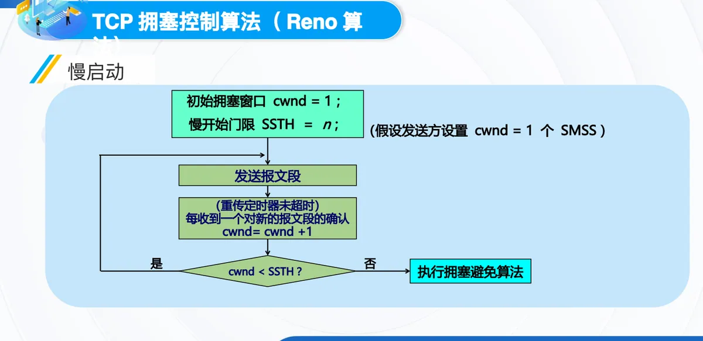
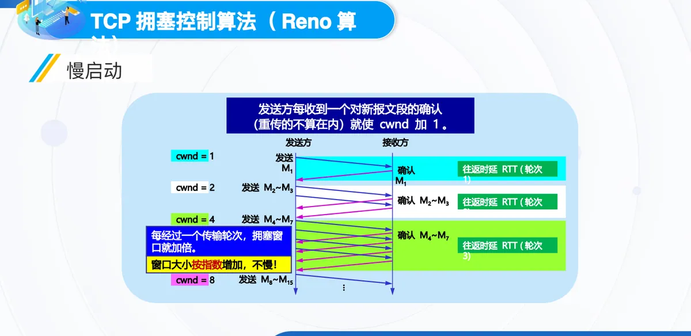
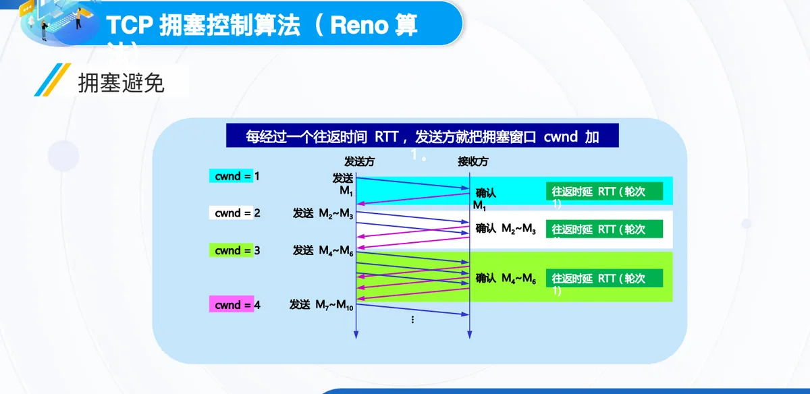
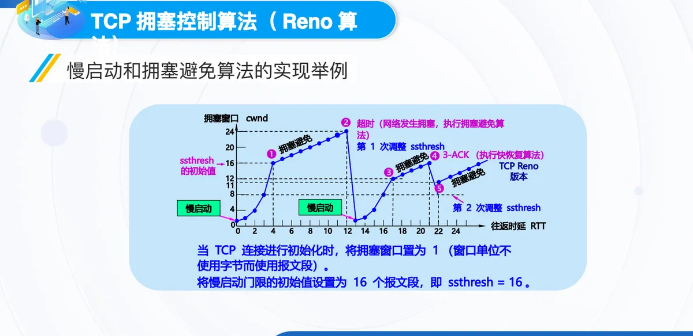
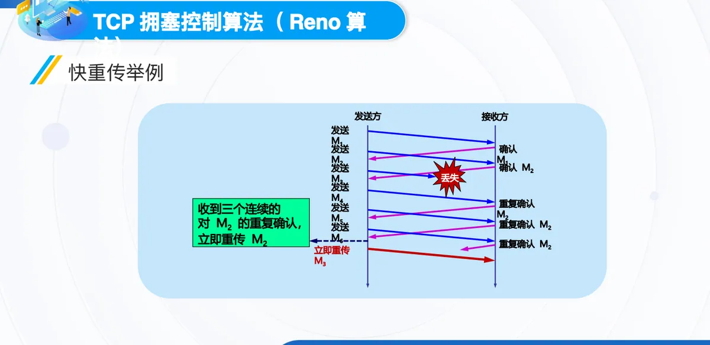
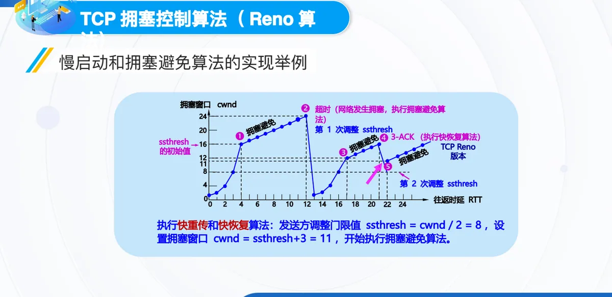

计算机通信与网络 · 第二版讲义 · 第 6 章 网络中的拥塞控制
6.4 TCP拥塞控制与Reno算法
前几节讲拥塞现象与路由器上的排队规则，这一节转到发送方：网络一旦拥塞，TCP 用什么办法把注入网络的分组数压下来。它在滑动窗口之外再维持一个拥塞窗口 cwnd（Congestion Window），由它与接收方通知的窗口共同决定真正的发送窗口；围绕这个窗口的增减，Reno 算法给出慢启动、拥塞避免、快重传、快恢复四个基本过程。本节先讲拥塞窗口与判断拥塞的依据，再讲四个过程与门限值的调整规则，最后用一个完整例子把四者串起来，并看 Reno 暴露出的问题。
1. TCP 拥塞控制的方法：闭环控制与拥塞窗口
TCP 采用基于滑动窗口的方法进行拥塞控制，属于闭环控制方法：发送方事先并不知道网络能承受多少数据，只能一边发送、一边根据网络的反馈修正发送量。
为此，发送方另外维持一个拥塞窗口 cwnd（Congestion Window），它的大小取决于网络的拥塞程度并动态变化，发送端利用它根据网络的拥塞情况调整发送的数据量。发送窗口大小不仅取决于接收方窗口，还取决于网络的拥塞状况，真正的发送窗口值要取两者的较小者：
真正的发送窗口值 = Min (接收方通知的窗口值，拥塞窗口值)
接收方窗口反映收端缓存，拥塞窗口反映网络承受能力；6.3 节的排队规则说明，真正起限制作用的往往是较小的那个值。
控制拥塞窗口变化的原则只有两条：只要网络没有出现拥塞，拥塞窗口就可以再增大一些，以便把更多的分组发送出去，提高网络的利用率；但只要网络出现拥塞或有可能出现拥塞，就必须把拥塞窗口减小一些，以减少注入到网络中的分组数，缓解网络出现的拥塞。
发送方判断拥塞靠隐式反馈：超时重传计时器超时，说明网络已经出现了拥塞；连续收到 3 个重复的确认，则预示网络可能会出现拥塞。之所以把超时直接当成拥塞信号，是因为因传输出差错而丢弃分组的概率很小（远小于 1%）。
2. Reno 算法：四个基本过程与两个控制变量
Reno 算法是目前应用最广的版本，它包括四个基本过程：慢启动（slow-start）、拥塞避免（congestion avoidance）、快速重传（fast retransmit）和快速恢复（fast recovery）。四者是同一套窗口调整规则在不同拥塞情形下的分支：前两个把窗口向上推，后两个把窗口向下拉。
它们共用两个控制变量。拥塞窗口 cwnd 的初始值有 2 种设置方法：1 至 2 个最大报文段 MSS（Maximum Segment Size），属于旧标准；2 至 4 个最大报文段 MSS，由 RFC 5681 规定。慢启动门限 ssthresh（slow start threshold）用于防止拥塞窗口增长过大引起网络拥塞，相当于给「猛涨」划一条边界。
慢启动的目的是探测网络的负载能力或拥塞程度，算法是由小到大逐渐增大注入到网络中的数据字节，也就是由小到大逐渐增大拥塞窗口数值。窗口每次加多少按这条规则算：每收到一个对新的报文段的确认，就把拥塞窗口增加最多一个发送方的最大报文段 SMSS（Sender Maximum Segment Size）的数值，即
拥塞窗口 cwnd 每次的增加量 = min (N, SMSS)
式中 N 是原先未被确认的、但现在被刚收到的确认报文段所确认的字节数；取较小值，意味着一次确认最多只换来一个 SMSS 的增量。
3. 慢启动：cwnd 从 1 开始的指数增长
把上述规则串起来，就是慢启动的执行流程：连接刚建立时，假设发送方设置 cwnd = 1 个 SMSS，门限值 SSTH = n；随后发送报文段，只要重传定时器没有超时，就每收到一个对新报文段的确认让 cwnd = cwnd + 1，再判断窗口与门限值的关系——只要 cwnd < SSTH 就继续这一过程，一旦 cwnd 不再小于 SSTH，就转而执行拥塞避免算法。

每收一个确认只加 1，效果却是指数增长：一个轮次里的确认会陆续到达。以慢启动的发送过程为例，cwnd = 1 时发出 M1，确认后 cwnd = 2 发出 M2~M3，确认后 cwnd = 4 发出 M4~M7，再变为 8 发出 M8~M15——第 1 个往返时延 RTT 里只有 1 个报文段，此后每一轮翻一倍，每经过一个传输轮次，拥塞窗口就加倍，窗口按指数规律增加。可见「慢启动」这个名字只说明起点小，并不说明增长慢。

发送方每收到一个对新报文段的确认（重传的不算在内）就使 cwnd 加 1。而传输轮次（transmission round）是指把拥塞窗口 cwnd 所允许发送的报文段都连续发送出去，并收到了对已发送的最后一个字节的确认；一个传输轮次所经历的时间其实就是往返时间 RTT（Round-Trip Time）。例如 cwnd = 4 时，这时的 RTT 就是连续发送 4 个报文段、并收到这 4 个报文段的确认所经历的总时间。
4. 慢启动门限与拥塞避免
窗口不能永远翻倍涨下去，慢启动门限 ssthresh 就是那个转折点。它的用法分三种情形：当 cwnd < ssthresh 时，使用慢启动算法；当 cwnd > ssthresh 时，停止使用慢启动算法，改用拥塞避免算法；当 cwnd = ssthresh 时，既可使用慢启动算法，也可使用拥塞避免算法。
拥塞避免的目的是让拥塞窗口 cwnd 缓慢地增大，避免出现拥塞。它的规则是：每经过一个往返时间 RTT（不管在此期间收到了多少确认），发送方的拥塞窗口 cwnd = cwnd + 1。与慢启动对照，慢启动每收到一个确认就加 1（一个轮次翻一倍），拥塞避免每经过一个轮次才加 1，窗口按线性规律缓慢增长，具有加法增大 AI（Additive Increase）的特点。
以一个发送过程为例：每经过一个 RTT，发送方就把 cwnd 加 1，窗口依次为 1、2、3、4，相应连续发送的报文段是 M1、M2~M3、M4~M6、M7~M10。

有一处容易误解：「拥塞避免」并非完全避免拥塞，而是让拥塞窗口增长得缓慢些，使网络不容易出现拥塞；真正避免不了的时候，就得靠快重传、快恢复以及超时后的窗口收缩及时退让。
5. 判断到拥塞之后：门限减半、窗口归 1
无论在慢启动阶段还是在拥塞避免阶段，只要发送方判断网络出现拥塞（重传定时器超时），就执行同一套动作：
ssthresh = max (cwnd/2，2)
cwnd = 1
随后重新执行慢启动算法，目的是迅速减少主机发送到网络中的分组数，使得发生拥塞的路由器有足够时间把队列中积压的分组处理完毕。门限值压到原窗口的一半（但不小于 2）体现「乘法减小」，窗口回到 1 则是退回最保守的起点。两类拥塞信号的处理对照如下：
| 拥塞信号 | 慢启动门限 ssthresh | 拥塞窗口 cwnd | 随后执行 |
|---|---|---|---|
| 重传定时器超时 | ssthresh = max (cwnd/2，2) | cwnd = 1 | 慢启动算法 |
| 连续收到 3 个重复确认 | ssthresh = cwnd/2 | cwnd = ssthresh + 3 | 拥塞避免算法 |
6. 一个完整的例子：cwnd 随 RTT 怎么变
下面这条曲线把四个过程放在同一张图上。

连接初始化时，把拥塞窗口置为 1（这里的窗口单位不使用字节而使用报文段），并把慢启动门限的初始值设置为 16 个报文段，即 ssthresh = 16——这就是曲线上「ssthresh 的初始值」那条水平线，曲线同时标出了慢启动与拥塞避免两段。慢启动开始时 cwnd = 1，发出第一个报文段；此后每收到一个对新报文段的确认 ACK 就把 cwnd 加 1，因此 cwnd 随着 RTT 按指数规律增长。当 cwnd 增长到慢启动门限值 ssthresh 时，改为执行拥塞避免算法，窗口按线性规律增长。
窗口涨到 cwnd = 24 时，网络出现了超时，发送方判断为网络拥塞。它调整门限值 ssthresh = cwnd / 2 = 12，同时设置 cwnd = 1，进入慢开始阶段——曲线上那条从 24 直落到底部的折线，旁边的标注就是「第 1 次调整 ssthresh」，调整后的 12 画在初始值 16 的下方。接着按慢开始算法，每收到一个对新报文段的确认 ACK 就把 cwnd 加 1；当 cwnd = ssthresh = 12 时，改为执行拥塞避免算法，窗口按线性规律增大。
窗口再次涨到 cwnd = 16 时，发送方连续收到 3 个对同一个报文段的重复确认（记为 3-ACK）。这更像是只丢了个别报文段，于是改为执行快重传和快恢复算法：调整门限值 ssthresh = cwnd / 2 = 8，设置 cwnd = ssthresh + 3 = 11，随后开始执行拥塞避免算法——这就是「第 2 次调整 ssthresh」的位置，也是标着 11 的那个点。调整后的门限值 8 成为下一轮增长的参照，窗口继续缓慢地线性增大，直到下一次拥塞事件再来一次「乘法减小」，曲线因此在门限值上下呈锯齿形往复。
7. 快重传：用三个重复确认抢在超时之前
快重传的目的是让发送方尽早知道发生了个别报文段的丢失：发送方只要连续收到三个重复的确认，就立即进行重传（即「快速重传」），这样就不会出现超时。使用快重传可以使整个网络的吞吐量提高约 20%，好处来自「不等计时器超时」这一步。
要让它成立，接收方也得配合：快重传算法要求接收方立即发送确认，即使收到了失序的报文段，也要立即发出对已收到的报文段的重复确认，不能攒着数据不确认，也不能因乱序而沉默。
发送方陆续发出若干报文段，其中一个在中途丢失；接收方每收到一个失序的报文段，就重复发出对已收到的那个报文段的确认。发送方连续收到三个这样的重复确认，就判断该报文段丢失并立即重传它，不必再等计时器超时。

有一处细节需要注意：快速重传并非取消重传计时器，而是在某些情况下可以更早地（更快地）重传丢失的报文段；一旦计时器先超时，走的仍然是门限减半、窗口归 1 的那条路。
8. 快恢复与 AIMD
当发送端收到连续三个重复的确认时，网络很可能只是轻微拥塞或者只丢了个别报文段，此时不执行慢启动算法，而是执行快恢复 FR（Fast Recovery）算法：把慢启动门限设为当前拥塞窗口的一半，即 ssthresh = 当前拥塞窗口 cwnd / 2，这是拥塞窗口的乘法减小 MD（Multiplicative Decrease）；再把新的拥塞窗口设为 cwnd = 慢启动门限 ssthresh + 3，加上的 3 对应那三个已经离开网络的报文段；然后执行拥塞避免算法，使拥塞窗口缓慢地线性增大，也就是加法增大 AI。
回到前面的例子：发送方在 cwnd = 16 时收到 3-ACK，于是调整门限值 ssthresh = cwnd / 2 = 8，设置拥塞窗口 cwnd = ssthresh + 3 = 11，然后开始执行拥塞避免算法。与超时处理对照就明白它「快」在哪里：超时把窗口打回 1，而快恢复只把门限降到一半、窗口降到 11。

乘法减小与加法增大合在一起，就是所谓的 AIMD 算法，它使 TCP 性能有明显改进：网络空闲时窗口稳步线性上升，遇到拥塞信号时窗口成倍收缩，多个连接在反复试探中共同逼近网络的可用容量。
9. 三个阶段之间的转移
把前面各段拼成一张流程图，就是 TCP 拥塞控制的全貌。TCP 连接建立之后进入慢开始阶段，初始拥塞窗口 cwnd = 1，窗口按指数规律增大；当 cwnd 达到慢启动门限 ssthresh 时，转入拥塞避免阶段，窗口按线性规律增大。
此后无论处在哪个阶段，只要重传定时器超时，就执行 ssthresh = cwnd / 2、cwnd = 1，回到慢开始阶段重新按指数增长；而只要连续收到 3 个重复的 ACK，就执行 ssthresh = cwnd / 2、cwnd = ssthresh + 3，再回到拥塞避免阶段按线性增长。这样的循环在连接存续期间反复进行，直到 TCP 连接释放。
值得留意的是，超时与 3 个重复确认走的是两条不同的退让路线：前者退回慢开始，后者直接进入拥塞避免；而两条路线都会把门限值减半。
10. 发送窗口的上限值
绕了一圈再回到最初的式子。TCP 发送窗口的上限值 = Min [rwnd, cwnd]，其中 rwnd 是接收方通知的接收窗口（receiver window），cwnd 是拥塞窗口。当 rwnd < cwnd 时，是接收方的接收能力限制发送窗口的最大值；当 cwnd < rwnd 时，是网络拥塞限制发送窗口的最大值。前一种情形属于流量控制要解决的问题（第一版讲义 5.4 TCP的流量控制），后一种属于拥塞控制，两个机制合起来才决定发送方真正能连续发出多少数据。
11. Reno 的公平性与时延
但 Reno 并不意味着对所有连接一视同仁。基本问题是：TCP Reno 在多个连接竞争带宽时，并不能实现真正的公平性。核心现象是，在多个 TCP 流竞争时，短 RTT 连接更快进入拥塞恢复，因而更快增加窗口，更占优势；长 RTT 连接增长速度慢，吞吐量受限，容易被「压制」。
原因在于拥塞窗口的增长与 RTT 成反比，而发送速率本身又受 RTT 影响，速率 ≈ cwnd / RTT。结论很清楚：TCP Reno 并不公平地对待不同 RTT 的流，在多流竞争场景下偏向短 RTT 流。
时延方面，各阶段表现不同。慢启动阶段窗口指数级增长，网络迅速被填满，于是队列积压，出现较大的传输时延和可能的丢包；拥塞避免阶段窗口线性增长，时延稳定，但可能较高；重传恢复阶段（快速重传或超时）窗口骤降，发送速率下降，时延短暂下降，之后又缓慢恢复，时延波动明显。结论是 TCP Reno 的时延波动性较大，尤其在突发性网络环境下，可能出现高抖动与不稳定的交互体验。
12. Reno 存在的问题
Reno 的改进版本是 New Reno，先看改进的动因。Reno 存在的问题是：当收到一个新的 ACK，就会退出快速恢复，拥塞窗口收缩到门限值（此处课件把拥塞窗口记作 CongWin），可能导致较长时间内无法发送新的报文段，也无法触发快速重传的机制；而当信道空闲时，一旦超时，又要直接回到慢启动。6.5 节继续看改进方案。
本节小结
- TCP 用基于滑动窗口的方法做拥塞控制，属于闭环控制；发送方维持拥塞窗口 cwnd，真正的发送窗口值 = Min (接收方通知的窗口值，拥塞窗口值)。判断拥塞靠隐式反馈：重传计时器超时说明已经拥塞，连续收到 3 个重复确认预示可能出现拥塞；
- Reno 算法包含慢启动、拥塞避免、快重传、快恢复四个基本过程，两个控制变量是 cwnd 与 ssthresh；cwnd 初始值可取 1 至 2 个 MSS（旧标准）或 2 至 4 个 MSS（RFC 5681），每次的增加量 = min (N, SMSS)；
- 慢启动让 cwnd 从 1 开始按指数规律增大，每经过一个传输轮次就加倍（传输轮次的时间就是 RTT）；涨到门限值 ssthresh 后改用拥塞避免，每经过一个 RTT 才把 cwnd 加 1，呈加法增大 AI 的线性增长；
- 超时表示网络已经拥塞，处理是 ssthresh = max (cwnd/2，2)、cwnd = 1 并回到慢启动；连续收到 3 个重复确认则执行快重传与快恢复，ssthresh = cwnd / 2、cwnd = ssthresh + 3 后转入拥塞避免。乘法减小 MD 与加法增大 AI 合起来就是 AIMD；
- 发送窗口的上限值 = Min [rwnd, cwnd]：rwnd < cwnd 时受限的是接收能力，cwnd < rwnd 时受限的是网络拥塞；
- Reno 也有短板：窗口增长与 RTT 成反比，偏向短 RTT 流；各阶段时延波动较大；收到一个新 ACK 就退出快速恢复，可能较长时间发不出新报文段。